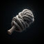
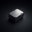
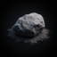
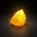
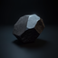

Ітеми та матеріали
Усе, що лежить у торбі й не вдягається. Зброя, обладунки й прикраси — у розділі Зброя та захист.
Матеріали 19
Падають із монстрів, продаються крамареві.
| Річ | Що дає | Ціна | Звідки падає |
|---|---|---|---|
| шкура | 5 | ведмідь (6 рів., 60%), лисиця (2 рів., 50%), рись (4 рів., 50%), олень-рогач (5 рів., 50%) і ще 187 | |
 кора дуба кора дуба | 8 | вовк (2 рів., 30%), кабан (3 рів., 20%), паглін (4 рів., 20%) | |
 павутина | 12 | слиз (4 рів., 50%), імп (5 рів., 50%) | |
 кістяний уламок кістяний уламок | 20 | скелет (8 рів., 55%), скелет-воїн (10 рів., 50%), скелет-лучник (11 рів., 50%), скелет-маг (13 рів., 50%) і ще 3 | |
 сталь | 60 | вампір-лорд (30 рів., 20%), зшитий кадавр-павук (32 рів., 20%), звіролюд-берсерк (35 рів., 20%) | |
 залізо | 300 | кабанолюд-громила (16 рів., 20%), дракон (20 рів., 20%), нагиня-чаклунка (24 рів., 20%) | |
 кістяний порох кістяний порох | 300 | не падає | |
 свята вода свята вода | 300 | не падає | |
 сірка | 300 | не падає | |
 обсидіан | 540 | гірська рись (55 рів., 20%), чотирирогий хребтовий таран-нежить (62 рів., 20%), рунічний голем завірюхи (66 рів., 20%) | |
 сирий кристал сирий кристал | 1 620 | гігантський рунічний голем хребтів (69 рів., 20%), чотирирукий монах-аскет (71 рів., 20%), вищий ліч-архімаг (74 рів., 20%) | |
 зоряний метал зоряний метал | 4 860 | грозовий скорпіон-імператор (76 рів., 20%), голем древніх гірських королів (78 рів., 20%), тектонічний некро-титан підніжжя (79 рів., 20%) | |
 E рунна есенція E E рунна есенція E | Для зачарування в коваля. Падає лише з босів. | 200 | боси підземель, понад свій дроп |
 D рунна есенція D D рунна есенція D | Для зачарування в коваля. Падає лише з босів. | 600 | боси підземель, понад свій дроп |
 C рунна есенція C C рунна есенція C | Для зачарування в коваля. Падає лише з босів. | 1 800 | боси підземель, понад свій дроп |
 B рунна есенція B B рунна есенція B | Для зачарування в коваля. Падає лише з босів. | 5 400 | боси підземель, понад свій дроп |
 A рунна есенція A A рунна есенція A | Для зачарування в коваля. Падає лише з босів. | 16 200 | боси підземель, понад свій дроп |
 S рунна есенція S S рунна есенція S | Для зачарування в коваля. Падає лише з босів. | 48 600 | боси підземель, понад свій дроп |
 SS рунна есенція SS SS рунна есенція SS | Для зачарування в коваля. Падає лише з босів. | 145 800 | боси підземель, понад свій дроп |
Зілля й кристали 4
Витрачаються з торби чи з панелі.
| Річ | Що дає | Ціна | Звідки падає |
|---|---|---|---|
 кристал душі кристал душі | мана +30 | 25 | не падає |
 великий кристал душі великий кристал душі | мана частка нестачі +0,5 | 90 | не падає |
 зілля лікування зілля лікування | здоров'я +500 | 150 | щуролюд-злодій (6 рів., 8%), гнол-мисливець (8 рів., 8%), зомбі (9 рів., 8%), скелет-воїн (10 рів., 8%) і ще 204 |
 благословенний кристал душі благословенний кристал душі | мана частка максимуму +1 | 300 | не падає |
Ключі святинь 7
Відчиняють святиню свого грейду і вхід у підземелля.
| Річ | Що дає | Ціна | Звідки падає |
|---|---|---|---|
 E ключ святині E E ключ святині E | 300 | заєць (1 рів., 25%), вовк (2 рів., 25%), кажан (2 рів., 25%), лисиця (2 рів., 25%) і ще 31 | |
 D ключ святині D D ключ святині D | 600 | кабанолюд-громила (16 рів., 25%), гуль (16 рів., 25%), зомбований печерний варан (16 рів., 25%), скорпіон-імператор (17 рів., 25%) і ще 17 | |
 C ключ святині C C ключ святині C | 1 100 | вампір-лорд (30 рів., 25%), росомаха-мутант (30 рів., 25%), гнол-шаман (31 рів., 25%), драконід-вартовий (32 рів., 25%) і ще 10 | |
 B ключ святині B B ключ святині B | 2 000 | ведмежий патріарх (42 рів., 25%), кістяний голем-збирач (43 рів., 25%), базальтовий некро-охоронець (45 рів., 25%), вовкулака-праотець (45 рів., 25%) і ще 17 | |
 A ключ святині A A ключ святині A | 3 600 | гірська рись (55 рів., 25%), аметистовий полярний ведмідь (56 рів., 25%), склепний павук-шпаринник (56 рів., 25%), сніжний барс (56 рів., 25%) і ще 45 | |
 S ключ святині S S ключ святині S | 6 400 | гігантський рунічний голем хребтів (69 рів., 25%), королева зимових міражів (69 рів., 25%), людиноподібний кріо-колос (69 рів., 25%), некротичний химера-вовк (69 рів., 25%) і ще 50 | |
 SS ключ святині SS SS ключ святині SS | 11 000 | грозовий скорпіон-імператор (76 рів., 25%), кріо-рись вічної мерзлоти (76 рів., 25%), піщаний хребтовий плавун (76 рів., 25%), тіньовий сторукий кадавр-павук (76 рів., 25%) і ще 20 |
Амулети гілок 8
Не вдягаються: відчиняють приховану гілку професії назавжди.
| Річ | Що дає | Ціна | Звідки падає |
|---|---|---|---|
 амулет білого воску амулет білого воску | гілка професії: Світоч | 50 000 | габаритний голем із плоті (47 рів., 1%), химера-владарка (48 рів., 1%) |
 амулет вовчого ікла амулет вовчого ікла | гілка професії: Шалений | 50 000 | габаритний голем із плоті (47 рів., 1%), химера-владарка (48 рів., 1%) |
 амулет нічного шовку амулет нічного шовку | гілка професії: Тінь | 50 000 | габаритний голем із плоті (47 рів., 1%), химера-владарка (48 рів., 1%) |
 амулет розбитого ікла амулет розбитого ікла | гілка професії: Буревій | 50 000 | блукаючий мертвяк (66 рів., 1%), голем із гірських черепів (66 рів., 1%) |
 амулет скам'янілої блискавки амулет скам'янілої блискавки | гілка професії: Стихієносець | 50 000 | блукаючий мертвяк (66 рів., 1%), голем із гірських черепів (66 рів., 1%) |
 амулет солоної крові амулет солоної крові | гілка професії: Воїн | 50 000 | вампір-лорд (30 рів., 1%), росомаха-мутант (30 рів., 1%) |
 амулет сірого попелу амулет сірого попелу | гілка професії: Послушник | 50 000 | вампір-лорд (30 рів., 1%), росомаха-мутант (30 рів., 1%) |
 амулет чорної печатки амулет чорної печатки | гілка професії: Судія | 50 000 | блукаючий мертвяк (66 рів., 1%), голем із гірських черепів (66 рів., 1%) |
Артефакти 1
| Річ | Що дає | Ціна | Звідки падає |
|---|---|---|---|
 SS артефакт ока бога SS артефакт ока бога | Рідкісна річ (слово замовника 20.09.2026). Лежить у торбі — у грі з'являється мініатюрна карта: її можна посунути будь-куди на екрані, згорнути хрестиком і розгорнути подвійним кліком по цій речі. Другий такий артефакт нічого не додає. Передається й продається, як усе інше. Ціна й звідки падає — пропозиція. | 25 000 | вампір-лорд (30 рів., 2%), росомаха-мутант (30 рів., 2%), гнол-шаман (31 рів., 2%), драконід-вартовий (32 рів., 2%) і ще 158 |
Руни 176
Руна вчить уміння або піднімає його рівень.
| Руна | Чого вчить | Ціна | Звідки падає |
|---|---|---|---|
 руна підняття E грейду руна підняття E грейду | піднімає вміння до наступного грейду | 250 | дракон (20 рів., 50%), кабан (3 рів., 6%), паглін (4 рів., 6%) і ще 2 |
 руна людська звичка руна людська звичка | E людська звичка · людина · з 1 рів. | 320 | кажан (2 рів., 3%), лисиця (2 рів., 3%), кабан (3 рів., 3%) |
 руна лісова хода руна лісова хода | E лісова хода · ельф · з 1 рів. | 320 | заєць (1 рів., 3%), кажан (2 рів., 3%), лисиця (2 рів., 3%) |
 руна товста шкура руна товста шкура | E товста шкура · орк · з 1 рів. | 320 | вовк (2 рів., 3%), кажан (2 рів., 3%), лисиця (2 рів., 3%) |
 руна клича стійкості руна клича стійкості | E клич стійкості · усім · з 1 рів. | 380 | кажан (2 рів., 8%) |
 руна клича хоробрості руна клича хоробрості | E клич хоробрості · усім · з 1 рів. | 380 | кажан (2 рів., 8%) |
 руна стійки клинка руна стійки клинка | E стійка клинка · усім · з 1 рів. | 380 | кабан (3 рів., 8%) |
 руна стійки щита руна стійки щита | E стійка щита · усім · з 1 рів. | 380 | вовк (2 рів., 8%) |
 руна енергетичного вибуху руна енергетичного вибуху | E енергетичний вибух · усім · з 1 рів. | 400 | ведмідь (6 рів., 8%) |
 руна енергетичного променю руна енергетичного променю | E енергетичний промінь · усім · з 3 рів. | 400 | вовк (2 рів., 10%), слиз (4 рів., 9%), імп (5 рів., 9%) |
 руна підняття D грейду руна підняття D грейду | піднімає вміння до наступного грейду | 450 | слиз (4 рів., 5%), кабан (3 рів., 3%) |
 руна вихору клинків руна вихору клинків | D вихор клинків · усім · з 5 рів. | 700 | паглін (4 рів., 6%) |
 руна залізної шкіри руна залізної шкіри | D залізна шкіра · усім · з 5 рів. | 700 | імп (5 рів., 6%) |
 руна клича люті руна клича люті | D клич люті · усім · з 5 рів. | 700 | слиз (4 рів., 6%) |
 руна клича незламності руна клича незламності | D клич незламності · усім · з 5 рів. | 700 | імп (5 рів., 6%) |
 руна потужного удару руна потужного удару | D потужний удар · усім · з 5 рів. | 700 | імп (5 рів., 6%) |
 руна хвилі сили руна хвилі сили | D хвиля сили · усім · з 5 рів. | 700 | паглін (4 рів., 6%) |
 руна важка рука руна важка рука | D важка рука · орк · з 12 рів. | 760 | скелет-лучник (11 рів., 3%), кажан-кровопивця (12 рів., 3%), ведмідь-мутант (13 рів., 3%) |
 руна впертість руна впертість | D впертість · людина · з 12 рів. | 760 | кабан-мутант (11 рів., 3%), павук-тенетник (12 рів., 3%), кажан-кровопивця (12 рів., 3%) |
 руна гостре око руна гостре око | D гостре око · ельф · з 8 рів. | 760 | плащоносна ящірка (7 рів., 3%), печерний ведмідь (9 рів., 3%), зомбі (9 рів., 3%) |
 руна друга рука руна друга рука | D друга рука · людина · з 8 рів. | 760 | вовк-сіромаха (7 рів., 3%), плащоносна ящірка (7 рів., 3%), печерний ведмідь (9 рів., 3%) |
 руна лють руна лють | D лють · орк · з 8 рів. | 760 | скелет (8 рів., 3%), печерний ведмідь (9 рів., 3%), зомбі (9 рів., 3%) |
 руна течія сили руна течія сили | D течія сили · ельф · з 12 рів. | 760 | павук-тенетник (12 рів., 3%), кажан-кровопивця (12 рів., 3%), ведмідь-мутант (13 рів., 3%) |
 руна підняття C грейду руна підняття C грейду | піднімає вміння до наступного грейду | 800 | дракон (20 рів., 30%), скелет (8 рів., 4%), ведмідь (6 рів., 3%) |
 руна вміння «благословення роду» руна вміння «благословення роду» | D благословення роду · Послушник · з 24 рів. | 900 | ведмедолюд-вождь (24 рів., 3%), нагиня-чаклунка (24 рів., 3%), зіпсований підземельний кріт (24 рів., 3%) |
 руна вміння «бойовий клич роти» руна вміння «бойовий клич роти» | D бойовий клич роти · Воїн · з 28 рів. | 900 | скорпіонолюд (27 рів., 3%), кістяний печерний ведмідь (28 рів., 3%), тур-велет (28 рів., 3%) |
 руна вміння «влучний постріл» руна вміння «влучний постріл» | D влучний постріл · Стрілець · з 20 рів. | 900 | упир (19 рів., 3%), дракон (20 рів., 3%), гнилокрилий кажан-упир (20 рів., 3%) |
 руна вміння «вогняне коло» руна вміння «вогняне коло» | D вогняне коло · Чародій · з 24 рів. | 900 | ведмедолюд-вождь (24 рів., 3%), нагиня-чаклунка (24 рів., 3%), зіпсований підземельний кріт (24 рів., 3%) |
 руна вміння «крижаний спис» руна вміння «крижаний спис» | D крижаний спис · Чародій · з 20 рів. | 900 | упир (19 рів., 3%), дракон (20 рів., 3%), гнилокрилий кажан-упир (20 рів., 3%) |
 руна вміння «оглушливий удар» руна вміння «оглушливий удар» | D оглушливий удар · Воїн · з 24 рів. | 900 | ведмедолюд-вождь (24 рів., 3%), нагиня-чаклунка (24 рів., 3%), зіпсований підземельний кріт (24 рів., 3%) |
 руна вміння «печать розуму» руна вміння «печать розуму» | D печать розуму · Чародій · з 28 рів. | 900 | скорпіонолюд (27 рів., 3%), кістяний печерний ведмідь (28 рів., 3%), тур-велет (28 рів., 3%) |
 руна вміння «промінь віри» руна вміння «промінь віри» | D промінь віри · Послушник · з 28 рів. | 900 | скорпіонолюд (27 рів., 3%), кістяний печерний ведмідь (28 рів., 3%), тур-велет (28 рів., 3%) |
 руна вміння «підсічка» руна вміння «підсічка» | D підсічка · Стрілець · з 24 рів. | 900 | ведмедолюд-вождь (24 рів., 3%), нагиня-чаклунка (24 рів., 3%), зіпсований підземельний кріт (24 рів., 3%) |
 руна вміння «розсічення» руна вміння «розсічення» | D розсічення · Воїн · з 20 рів. | 900 | упир (19 рів., 3%), дракон (20 рів., 3%), гнилокрилий кажан-упир (20 рів., 3%) |
 руна вміння «слово спокою» руна вміння «слово спокою» | D слово спокою · Послушник · з 20 рів. | 900 | упир (19 рів., 3%), дракон (20 рів., 3%), гнилокрилий кажан-упир (20 рів., 3%) |
 руна вміння «соколине око» руна вміння «соколине око» | D соколине око · Стрілець · з 28 рів. | 900 | скорпіонолюд (27 рів., 3%), кістяний печерний ведмідь (28 рів., 3%), тур-велет (28 рів., 3%) |
 руна бойового гарту руна бойового гарту | C бойовий гарт · усім · з 10 рів. | 1 200 | ведмідь (6 рів., 5%) |
 руна невблаганності руна невблаганності | C невблаганність · усім · з 10 рів. | 1 200 | скелет (8 рів., 5%) |
 руна правосуддя руна правосуддя | C правосуддя · усім · з 10 рів. | 1 200 | дракон (20 рів., 30%) |
 руна голос роду руна голос роду | C голос роду · людина · з 20 рів. | 1 500 | вовкулака (18 рів., 3%), наг (19 рів., 3%), вовкулака-альфа (22 рів., 3%) |
 руна клич роду руна клич роду | C клич роду · людина · з 20 рів. | 1 500 | упир (19 рів., 3%), дракон (20 рів., 3%), драконід-воїн (21 рів., 3%) |
 руна не впаду руна не впаду | C не впаду · орк · з 28 рів. | 1 500 | скорпіонолюд (27 рів., 3%), щуролюд-ватажок (27 рів., 3%), тур-велет (28 рів., 3%) |
 руна останній подих руна останній подих | C останній подих · людина · з 28 рів. | 1 500 | драконід-жрець (25 рів., 3%), скорпіонолюд (27 рів., 3%), тур-велет (28 рів., 3%) |
 руна подих гаю руна подих гаю | C подих гаю · ельф · з 28 рів. | 1 500 | скорпіонолюд (27 рів., 3%), вампір-лорд (30 рів., 3%), росомаха-мутант (30 рів., 3%) |
 руна поклик матері руна поклик матері | C поклик матері · орк · з 20 рів. | 1 500 | вовкулака (18 рів., 3%), упир (19 рів., 3%), драконід-воїн (21 рів., 3%) |
 руна пісня предків руна пісня предків | C пісня предків · ельф · з 20 рів. | 1 500 | упир (19 рів., 3%), наг (19 рів., 3%), драконід-воїн (21 рів., 3%) |
 руна рев вождя руна рев вождя | C рев вождя · орк · з 20 рів. | 1 500 | вовкулака (18 рів., 3%), упир (19 рів., 3%), вовкулака-альфа (22 рів., 3%) |
 руна стріла предків руна стріла предків | C стріла предків · ельф · з 20 рів. | 1 500 | вовкулака (18 рів., 3%), наг (19 рів., 3%), вовкулака-альфа (22 рів., 3%) |
 руна вміння «вирок» руна вміння «вирок» | C вирок · Кара · з 40 рів. | 2 000 | проклятий кристалічний скорпіон-нежить (38 рів., 3%), кабанолюд-вождь (39 рів., 3%), тіньовий некро-ірбіс (40 рів., 3%) |
 руна вміння «вогняний спис» руна вміння «вогняний спис» | C вогняний спис · Вогнедій · з 40 рів. | 2 000 | проклятий кристалічний скорпіон-нежить (38 рів., 3%), кабанолюд-вождь (39 рів., 3%), тіньовий некро-ірбіс (40 рів., 3%) |
 руна вміння «град стріл» руна вміння «град стріл» | C град стріл · Стрілець · з 32 рів. | 2 000 | драконід-вартовий (32 рів., 3%), зшитий кадавр-павук (32 рів., 3%), василіск (33 рів., 3%) |
 руна вміння «дотик праху» руна вміння «дотик праху» | C дотик праху · Некромант · з 40 рів. | 2 000 | проклятий кристалічний скорпіон-нежить (38 рів., 3%), кабанолюд-вождь (39 рів., 3%), тіньовий некро-ірбіс (40 рів., 3%) |
 руна вміння «жага бою» руна вміння «жага бою» | C жага бою · Воїн · з 30 рів. | 2 000 | вампір-лорд (30 рів., 3%), росомаха-мутант (30 рів., 3%), гнол-шаман (31 рів., 3%) |
 руна вміння «кара за гординю» руна вміння «кара за гординю» | C кара за гординю · Послушник · з 34 рів. | 2 000 | василіск (33 рів., 3%), лютововк (33 рів., 3%), чумоносний хребтовий підкопувач (34 рів., 3%) |
 руна вміння «мантія стихій» руна вміння «мантія стихій» | C мантія стихій · Чародій · з 32 рів. | 2 000 | драконід-вартовий (32 рів., 3%), зшитий кадавр-павук (32 рів., 3%), василіск (33 рів., 3%) |
 руна вміння «не падати» руна вміння «не падати» | C не падати · Воїн · з 36 рів. | 2 000 | звіролюд-берсерк (35 рів., 3%), двоголовий кістяний гончак склепу (36 рів., 3%), вепр-руйнівник (37 рів., 3%) |
 руна вміння «пастка з жил» руна вміння «пастка з жил» | C пастка з жил · Стрілець · з 30 рів. | 2 000 | вампір-лорд (30 рів., 3%), росомаха-мутант (30 рів., 3%), гнол-шаман (31 рів., 3%) |
 руна вміння «печать кволості» руна вміння «печать кволості» | C печать кволості · Послушник · з 32 рів. | 2 000 | драконід-вартовий (32 рів., 3%), зшитий кадавр-павук (32 рів., 3%), василіск (33 рів., 3%) |
 руна вміння «подвійний постріл» руна вміння «подвійний постріл» | C подвійний постріл · Стрілець · з 36 рів. | 2 000 | звіролюд-берсерк (35 рів., 3%), двоголовий кістяний гончак склепу (36 рів., 3%), вепр-руйнівник (37 рів., 3%) |
 руна вміння «попіл на рани» руна вміння «попіл на рани» | C попіл на рани · Послушник · з 30 рів. | 2 000 | вампір-лорд (30 рів., 3%), росомаха-мутант (30 рів., 3%), гнол-шаман (31 рів., 3%) |
 руна вміння «порожній погляд» руна вміння «порожній погляд» | C порожній погляд · Чародій · з 30 рів. | 2 000 | вампір-лорд (30 рів., 3%), росомаха-мутант (30 рів., 3%), гнол-шаман (31 рів., 3%) |
 руна вміння «пробивна стріла» руна вміння «пробивна стріла» | C пробивна стріла · Слідопит · з 40 рів. | 2 000 | проклятий кристалічний скорпіон-нежить (38 рів., 3%), кабанолюд-вождь (39 рів., 3%), тіньовий некро-ірбіс (40 рів., 3%) |
 руна вміння «розрив» руна вміння «розрив» | C розрив · Чародій · з 34 рів. | 2 000 | василіск (33 рів., 3%), лютововк (33 рів., 3%), чумоносний хребтовий підкопувач (34 рів., 3%) |
 руна вміння «рубець за рубець» руна вміння «рубець за рубець» | C рубець за рубець · Воїн · з 34 рів. | 2 000 | василіск (33 рів., 3%), лютововк (33 рів., 3%), чумоносний хребтовий підкопувач (34 рів., 3%) |
 руна вміння «світло на рани» руна вміння «світло на рани» | C світло на рани · Світоч · з 40 рів. | 2 000 | проклятий кристалічний скорпіон-нежить (38 рів., 3%), кабанолюд-вождь (39 рів., 3%), тіньовий некро-ірбіс (40 рів., 3%) |
 руна вміння «стріла-жало» руна вміння «стріла-жало» | C стріла-жало · Стрілець · з 34 рів. | 2 000 | василіск (33 рів., 3%), лютововк (33 рів., 3%), чумоносний хребтовий підкопувач (34 рів., 3%) |
 руна вміння «стійка твердині» руна вміння «стійка твердині» | C стійка твердині · Воїн · з 32 рів. | 2 000 | драконід-вартовий (32 рів., 3%), зшитий кадавр-павук (32 рів., 3%), василіск (33 рів., 3%) |
 руна вміння «тиша» руна вміння «тиша» | C тиша · Чародій · з 36 рів. | 2 000 | звіролюд-берсерк (35 рів., 3%), двоголовий кістяний гончак склепу (36 рів., 3%), вепр-руйнівник (37 рів., 3%) |
 руна вміння «удар у спину» руна вміння «удар у спину» | C удар у спину · Тінь · з 40 рів. | 2 000 | проклятий кристалічний скорпіон-нежить (38 рів., 3%), кабанолюд-вождь (39 рів., 3%), тіньовий некро-ірбіс (40 рів., 3%) |
 руна вміння «удар щитом» руна вміння «удар щитом» | C удар щитом · Латник · з 40 рів. | 2 000 | проклятий кристалічний скорпіон-нежить (38 рів., 3%), кабанолюд-вождь (39 рів., 3%), тіньовий некро-ірбіс (40 рів., 3%) |
 руна вміння «шал» руна вміння «шал» | C шал · Шалений · з 40 рів. | 2 000 | проклятий кристалічний скорпіон-нежить (38 рів., 3%), кабанолюд-вождь (39 рів., 3%), тіньовий некро-ірбіс (40 рів., 3%) |
 руна вміння «щит слова» руна вміння «щит слова» | C щит слова · Послушник · з 36 рів. | 2 000 | звіролюд-берсерк (35 рів., 3%), двоголовий кістяний гончак склепу (36 рів., 3%), вепр-руйнівник (37 рів., 3%) |
 руна вміння «блискавка» руна вміння «блискавка» | B блискавка · Вогнедій · з 46 рів. | 4 500 | базальтовий некро-охоронець (45 рів., 3%), вовкулака-праотець (45 рів., 3%), габаритний голем із плоті (47 рів., 3%) |
 руна вміння «вага гори» руна вміння «вага гори» | B вага гори · Латник · з 50 рів. | 4 500 | звіробог (50 рів., 3%), рунічний голем склепової варти (50 рів., 3%), скелет підгірського бабака (50 рів., 3%) |
 руна вміння «вигорання» руна вміння «вигорання» | B вигорання · Світоч · з 54 рів. | 4 500 | крижаний варан торосів (54 рів., 3%), кістяний гірський орел-стерв'ятник (54 рів., 3%), скельний ядозуб (54 рів., 3%) |
 руна вміння «виклик» руна вміння «виклик» | B виклик · Латник · з 48 рів. | 4 500 | габаритний голем із плоті (47 рів., 3%), химера-владарка (48 рів., 3%), чумний залізо-кам'яний титан (49 рів., 3%) |
 руна вміння «вихор заліза» руна вміння «вихор заліза» | B вихор заліза · Шалений · з 44 рів. | 4 500 | кістяний голем-збирач (43 рів., 3%), базальтовий некро-охоронець (45 рів., 3%), вовкулака-праотець (45 рів., 3%) |
 руна вміння «вовчий нюх» руна вміння «вовчий нюх» | B вовчий нюх · Шалений · з 46 рів. | 4 500 | базальтовий некро-охоронець (45 рів., 3%), вовкулака-праотець (45 рів., 3%), габаритний голем із плоті (47 рів., 3%) |
 руна вміння «відлучення» руна вміння «відлучення» | B відлучення · Кара · з 54 рів. | 4 500 | крижаний варан торосів (54 рів., 3%), кістяний гірський орел-стерв'ятник (54 рів., 3%), скельний ядозуб (54 рів., 3%) |
 руна вміння «вінок гнилі» руна вміння «вінок гнилі» | B вінок гнилі · Некромант · з 44 рів. | 4 500 | кістяний голем-збирач (43 рів., 3%), базальтовий некро-охоронець (45 рів., 3%), вовкулака-праотець (45 рів., 3%) |
 руна вміння «гон» руна вміння «гон» | B гон · Шалений · з 54 рів. | 4 500 | крижаний варан торосів (54 рів., 3%), кістяний гірський орел-стерв'ятник (54 рів., 3%), скельний ядозуб (54 рів., 3%) |
 руна вміння «грім» руна вміння «грім» | B грім · Вогнедій · з 50 рів. | 4 500 | звіробог (50 рів., 3%), рунічний голем склепової варти (50 рів., 3%), скелет підгірського бабака (50 рів., 3%) |
 руна вміння «жалива» руна вміння «жалива» | B жалива · Слідопит · з 50 рів. | 4 500 | звіробог (50 рів., 3%), рунічний голем склепової варти (50 рів., 3%), скелет підгірського бабака (50 рів., 3%) |
 руна вміння «жар у жилах» руна вміння «жар у жилах» | B жар у жилах · Вогнедій · з 48 рів. | 4 500 | габаритний голем із плоті (47 рів., 3%), химера-владарка (48 рів., 3%), чумний залізо-кам'яний титан (49 рів., 3%) |
 руна вміння «жила неба» руна вміння «жила неба» | B жила неба · Вогнедій · з 54 рів. | 4 500 | крижаний варан торосів (54 рів., 3%), кістяний гірський орел-стерв'ятник (54 рів., 3%), скельний ядозуб (54 рів., 3%) |
 руна вміння «жнива» руна вміння «жнива» | B жнива · Некромант · з 50 рів. | 4 500 | звіробог (50 рів., 3%), рунічний голем склепової варти (50 рів., 3%), скелет підгірського бабака (50 рів., 3%) |
 руна вміння «залізний обід» руна вміння «залізний обід» | B залізний обід · Латник · з 52 рів. | 4 500 | альпійська сарна (52 рів., 3%), зомбований круторогий козел (52 рів., 3%), кріо-рись кришталевих печер (52 рів., 3%) |
 руна вміння «злива» руна вміння «злива» | B злива · Слідопит · з 52 рів. | 4 500 | альпійська сарна (52 рів., 3%), зомбований круторогий козел (52 рів., 3%), кріо-рись кришталевих печер (52 рів., 3%) |
 руна вміння «кам'яна шкіра» руна вміння «кам'яна шкіра» | B кам'яна шкіра · Латник · з 46 рів. | 4 500 | базальтовий некро-охоронець (45 рів., 3%), вовкулака-праотець (45 рів., 3%), габаритний голем із плоті (47 рів., 3%) |
 руна вміння «коло відсічі» руна вміння «коло відсічі» | B коло відсічі · Кара · з 50 рів. | 4 500 | звіробог (50 рів., 3%), рунічний голем склепової варти (50 рів., 3%), скелет підгірського бабака (50 рів., 3%) |
 руна вміння «кривавий укус» руна вміння «кривавий укус» | B кривавий укус · Шалений · з 48 рів. | 4 500 | габаритний голем із плоті (47 рів., 3%), химера-владарка (48 рів., 3%), чумний залізо-кам'яний титан (49 рів., 3%) |
 руна вміння «кістяний частокіл» руна вміння «кістяний частокіл» | B кістяний частокіл · Некромант · з 46 рів. | 4 500 | базальтовий некро-охоронець (45 рів., 3%), вовкулака-праотець (45 рів., 3%), габаритний голем із плоті (47 рів., 3%) |
 руна вміння «молитва за живих» руна вміння «молитва за живих» | B молитва за живих · Світоч · з 46 рів. | 4 500 | базальтовий некро-охоронець (45 рів., 3%), вовкулака-праотець (45 рів., 3%), габаритний голем із плоті (47 рів., 3%) |
 руна вміння «непорушність» руна вміння «непорушність» | B непорушність · Світоч · з 50 рів. | 4 500 | звіробог (50 рів., 3%), рунічний голем склепової варти (50 рів., 3%), скелет підгірського бабака (50 рів., 3%) |
 руна вміння «непохитна віра» руна вміння «непохитна віра» | B непохитна віра · Кара · з 52 рів. | 4 500 | альпійська сарна (52 рів., 3%), зомбований круторогий козел (52 рів., 3%), кріо-рись кришталевих печер (52 рів., 3%) |
 руна вміння «непохитність» руна вміння «непохитність» | B непохитність · Латник · з 44 рів. | 4 500 | кістяний голем-збирач (43 рів., 3%), базальтовий некро-охоронець (45 рів., 3%), вовкулака-праотець (45 рів., 3%) |
 руна вміння «остання лють» руна вміння «остання лють» | B остання лють · Шалений · з 52 рів. | 4 500 | альпійська сарна (52 рів., 3%), зомбований круторогий козел (52 рів., 3%), кріо-рись кришталевих печер (52 рів., 3%) |
 руна вміння «останній подих світла» руна вміння «останній подих світла» | B останній подих світла · Світоч · з 52 рів. | 4 500 | альпійська сарна (52 рів., 3%), зомбований круторогий козел (52 рів., 3%), кріо-рись кришталевих печер (52 рів., 3%) |
 руна вміння «отруйне лезо» руна вміння «отруйне лезо» | B отруйне лезо · Тінь · з 48 рів. | 4 500 | габаритний голем із плоті (47 рів., 3%), химера-владарка (48 рів., 3%), чумний залізо-кам'яний титан (49 рів., 3%) |
 руна вміння «перерізати» руна вміння «перерізати» | B перерізати · Тінь · з 52 рів. | 4 500 | альпійська сарна (52 рів., 3%), зомбований круторогий козел (52 рів., 3%), кріо-рись кришталевих печер (52 рів., 3%) |
 руна вміння «печать могили» руна вміння «печать могили» | B печать могили · Некромант · з 48 рів. | 4 500 | габаритний голем із плоті (47 рів., 3%), химера-владарка (48 рів., 3%), чумний залізо-кам'яний титан (49 рів., 3%) |
 руна вміння «плавлення» руна вміння «плавлення» | B плавлення · Вогнедій · з 52 рів. | 4 500 | альпійська сарна (52 рів., 3%), зомбований круторогий козел (52 рів., 3%), кріо-рись кришталевих печер (52 рів., 3%) |
 руна вміння «плащ мертвих» руна вміння «плащ мертвих» | B плащ мертвих · Некромант · з 52 рів. | 4 500 | альпійська сарна (52 рів., 3%), зомбований круторогий козел (52 рів., 3%), кріо-рись кришталевих печер (52 рів., 3%) |
 руна вміння «полум'я віри» руна вміння «полум'я віри» | B полум'я віри · Кара · з 44 рів. | 4 500 | кістяний голем-збирач (43 рів., 3%), базальтовий некро-охоронець (45 рів., 3%), вовкулака-праотець (45 рів., 3%) |
 руна вміння «попіл під ногами» руна вміння «попіл під ногами» | B попіл під ногами · Вогнедій · з 44 рів. | 4 500 | кістяний голем-збирач (43 рів., 3%), базальтовий некро-охоронець (45 рів., 3%), вовкулака-праотець (45 рів., 3%) |
 руна вміння «постріл крізь гілля» руна вміння «постріл крізь гілля» | B постріл крізь гілля · Слідопит · з 54 рів. | 4 500 | крижаний варан торосів (54 рів., 3%), кістяний гірський орел-стерв'ятник (54 рів., 3%), скельний ядозуб (54 рів., 3%) |
 руна вміння «постріл у жилу» руна вміння «постріл у жилу» | B постріл у жилу · Слідопит · з 44 рів. | 4 500 | кістяний голем-збирач (43 рів., 3%), базальтовий некро-охоронець (45 рів., 3%), вовкулака-праотець (45 рів., 3%) |
 руна вміння «рвати» руна вміння «рвати» | B рвати · Шалений · з 50 рів. | 4 500 | звіробог (50 рів., 3%), рунічний голем склепової варти (50 рів., 3%), скелет підгірського бабака (50 рів., 3%) |
 руна вміння «розкол» руна вміння «розкол» | B розкол · Латник · з 54 рів. | 4 500 | крижаний варан торосів (54 рів., 3%), кістяний гірський орел-стерв'ятник (54 рів., 3%), скельний ядозуб (54 рів., 3%) |
 руна вміння «розчинитись» руна вміння «розчинитись» | B розчинитись · Тінь · з 44 рів. | 4 500 | кістяний голем-збирач (43 рів., 3%), базальтовий некро-охоронець (45 рів., 3%), вовкулака-праотець (45 рів., 3%) |
 руна вміння «слово сили» руна вміння «слово сили» | B слово сили · Світоч · з 48 рів. | 4 500 | габаритний голем із плоті (47 рів., 3%), химера-владарка (48 рів., 3%), чумний залізо-кам'яний титан (49 рів., 3%) |
 руна вміння «сліпа пляма» руна вміння «сліпа пляма» | B сліпа пляма · Тінь · з 46 рів. | 4 500 | базальтовий некро-охоронець (45 рів., 3%), вовкулака-праотець (45 рів., 3%), габаритний голем із плоті (47 рів., 3%) |
 руна вміння «стежка звіра» руна вміння «стежка звіра» | B стежка звіра · Слідопит · з 46 рів. | 4 500 | базальтовий некро-охоронець (45 рів., 3%), вовкулака-праотець (45 рів., 3%), габаритний голем із плоті (47 рів., 3%) |
 руна вміння «стрілецький спокій» руна вміння «стрілецький спокій» | B стрілецький спокій · Слідопит · з 48 рів. | 4 500 | габаритний голем із плоті (47 рів., 3%), химера-владарка (48 рів., 3%), чумний залізо-кам'яний титан (49 рів., 3%) |
 руна вміння «сіль і слово» руна вміння «сіль і слово» | B сіль і слово · Кара · з 46 рів. | 4 500 | базальтовий некро-охоронець (45 рів., 3%), вовкулака-праотець (45 рів., 3%), габаритний голем із плоті (47 рів., 3%) |
 руна вміння «тавро праху» руна вміння «тавро праху» | B тавро праху · Некромант · з 54 рів. | 4 500 | крижаний варан торосів (54 рів., 3%), кістяний гірський орел-стерв'ятник (54 рів., 3%), скельний ядозуб (54 рів., 3%) |
 руна вміння «тягар провини» руна вміння «тягар провини» | B тягар провини · Кара · з 48 рів. | 4 500 | габаритний голем із плоті (47 рів., 3%), химера-владарка (48 рів., 3%), чумний залізо-кам'яний титан (49 рів., 3%) |
 руна вміння «тінь на п'яти» руна вміння «тінь на п'яти» | B тінь на п'яти · Тінь · з 50 рів. | 4 500 | звіробог (50 рів., 3%), рунічний голем склепової варти (50 рів., 3%), скелет підгірського бабака (50 рів., 3%) |
 руна вміння «удар нізвідки» руна вміння «удар нізвідки» | B удар нізвідки · Тінь · з 54 рів. | 4 500 | крижаний варан торосів (54 рів., 3%), кістяний гірський орел-стерв'ятник (54 рів., 3%), скельний ядозуб (54 рів., 3%) |
 руна вміння «хоругва» руна вміння «хоругва» | B хоругва · Світоч · з 44 рів. | 4 500 | кістяний голем-збирач (43 рів., 3%), базальтовий некро-охоронець (45 рів., 3%), вовкулака-праотець (45 рів., 3%) |
 руна вміння «без обличчя» руна вміння «без обличчя» | A без обличчя · Безликий · з 60 рів. | 9 000 | голчастий скелеїд (60 рів., 3%), зшитий ірбіс-потвора (60 рів., 3%), хребтовий сніговий плавун (60 рів., 3%) |
 руна вміння «безшумна тятива» руна вміння «безшумна тятива» | A безшумна тятива · Ловчий · з 66 рів. | 9 000 | блукаючий мертвяк (66 рів., 3%), голем із гірських черепів (66 рів., 3%), катакомбний послушник-кадавр (66 рів., 3%) |
 руна вміння «благословення вістря» руна вміння «благословення вістря» | A благословення вістря · Світоносець · з 68 рів. | 9 000 | базальтовий голем-мутант (68 рів., 3%), базальтовий титан проклятої крові (68 рів., 3%), катакомбний повзун (68 рів., 3%) |
 руна вміння «борг крові» руна вміння «борг крові» | A борг крові · Буревій · з 66 рів. | 9 000 | блукаючий мертвяк (66 рів., 3%), голем із гірських черепів (66 рів., 3%), катакомбний послушник-кадавр (66 рів., 3%) |
 руна вміння «брама» руна вміння «брама» | A брама · Твердиня · з 60 рів. | 9 000 | голчастий скелеїд (60 рів., 3%), зшитий ірбіс-потвора (60 рів., 3%), хребтовий сніговий плавун (60 рів., 3%) |
 руна вміння «буря клинків» руна вміння «буря клинків» | A буря клинків · Буревій · з 60 рів. | 9 000 | голчастий скелеїд (60 рів., 3%), зшитий ірбіс-потвора (60 рів., 3%), хребтовий сніговий плавун (60 рів., 3%) |
 руна вміння «вирок без оскарження» руна вміння «вирок без оскарження» | A вирок без оскарження · Судія · з 60 рів. | 9 000 | голчастий скелеїд (60 рів., 3%), зшитий ірбіс-потвора (60 рів., 3%), хребтовий сніговий плавун (60 рів., 3%) |
 руна вміння «вогонь очищення» руна вміння «вогонь очищення» | A вогонь очищення · Судія · з 64 рів. | 9 000 | крижаний вепр (64 рів., 3%), кристалічний скелеїд-паразит (64 рів., 3%), мавпоподібний альпійський пращур (64 рів., 3%) |
 руна вміння «гнів небес» руна вміння «гнів небес» | A гнів небес · Стихієносець · з 68 рів. | 9 000 | базальтовий голем-мутант (68 рів., 3%), базальтовий титан проклятої крові (68 рів., 3%), катакомбний повзун (68 рів., 3%) |
 руна вміння «затримати грім» руна вміння «затримати грім» | A затримати грім · Стихієносець · з 66 рів. | 9 000 | блукаючий мертвяк (66 рів., 3%), голем із гірських черепів (66 рів., 3%), катакомбний послушник-кадавр (66 рів., 3%) |
 руна вміння «зрізати стадо» руна вміння «зрізати стадо» | A зрізати стадо · Ловчий · з 64 рів. | 9 000 | крижаний вепр (64 рів., 3%), кристалічний скелеїд-паразит (64 рів., 3%), мавпоподібний альпійський пращур (64 рів., 3%) |
 руна вміння «крижана буря» руна вміння «крижана буря» | A крижана буря · Стихієносець · з 64 рів. | 9 000 | крижаний вепр (64 рів., 3%), кристалічний скелеїд-паразит (64 рів., 3%), мавпоподібний альпійський пращур (64 рів., 3%) |
 руна вміння «море праху» руна вміння «море праху» | A море праху · Володар праху · з 64 рів. | 9 000 | крижаний вепр (64 рів., 3%), кристалічний скелеїд-паразит (64 рів., 3%), мавпоподібний альпійський пращур (64 рів., 3%) |
 руна вміння «мітка ловчого» руна вміння «мітка ловчого» | A мітка ловчого · Ловчий · з 68 рів. | 9 000 | базальтовий голем-мутант (68 рів., 3%), базальтовий титан проклятої крові (68 рів., 3%), катакомбний повзун (68 рів., 3%) |
 руна вміння «невтримність» руна вміння «невтримність» | A невтримність · Буревій · з 64 рів. | 9 000 | крижаний вепр (64 рів., 3%), кристалічний скелеїд-паразит (64 рів., 3%), мавпоподібний альпійський пращур (64 рів., 3%) |
 руна вміння «окови землі» руна вміння «окови землі» | A окови землі · Твердиня · з 66 рів. | 9 000 | блукаючий мертвяк (66 рів., 3%), голем із гірських черепів (66 рів., 3%), катакомбний послушник-кадавр (66 рів., 3%) |
 руна вміння «печать мовчання» руна вміння «печать мовчання» | A печать мовчання · Судія · з 66 рів. | 9 000 | блукаючий мертвяк (66 рів., 3%), голем із гірських черепів (66 рів., 3%), катакомбний послушник-кадавр (66 рів., 3%) |
 руна вміння «печать небуття» руна вміння «печать небуття» | A печать небуття · Володар праху · з 68 рів. | 9 000 | базальтовий голем-мутант (68 рів., 3%), базальтовий титан проклятої крові (68 рів., 3%), катакомбний повзун (68 рів., 3%) |
 руна вміння «позичене обличчя» руна вміння «позичене обличчя» | A позичене обличчя · Безликий · з 66 рів. | 9 000 | блукаючий мертвяк (66 рів., 3%), голем із гірських черепів (66 рів., 3%), катакомбний послушник-кадавр (66 рів., 3%) |
 руна вміння «присяга вартового» руна вміння «присяга вартового» | A присяга вартового · Твердиня · з 68 рів. | 9 000 | базальтовий голем-мутант (68 рів., 3%), базальтовий титан проклятої крові (68 рів., 3%), катакомбний повзун (68 рів., 3%) |
 руна вміння «розтрощити» руна вміння «розтрощити» | A розтрощити · Буревій · з 68 рів. | 9 000 | базальтовий голем-мутант (68 рів., 3%), базальтовий титан проклятої крові (68 рів., 3%), катакомбний повзун (68 рів., 3%) |
 руна вміння «рука з-під землі» руна вміння «рука з-під землі» | A рука з-під землі · Володар праху · з 60 рів. | 9 000 | голчастий скелеїд (60 рів., 3%), зшитий ірбіс-потвора (60 рів., 3%), хребтовий сніговий плавун (60 рів., 3%) |
 руна вміння «світанок» руна вміння «світанок» | A світанок · Світоносець · з 60 рів. | 9 000 | голчастий скелеїд (60 рів., 3%), зшитий ірбіс-потвора (60 рів., 3%), хребтовий сніговий плавун (60 рів., 3%) |
 руна вміння «смертельний надріз» руна вміння «смертельний надріз» | A смертельний надріз · Безликий · з 64 рів. | 9 000 | крижаний вепр (64 рів., 3%), кристалічний скелеїд-паразит (64 рів., 3%), мавпоподібний альпійський пращур (64 рів., 3%) |
 руна вміння «стовп вогню» руна вміння «стовп вогню» | A стовп вогню · Стихієносець · з 60 рів. | 9 000 | голчастий скелеїд (60 рів., 3%), зшитий ірбіс-потвора (60 рів., 3%), хребтовий сніговий плавун (60 рів., 3%) |
 руна вміння «стріла крізь серце» руна вміння «стріла крізь серце» | A стріла крізь серце · Ловчий · з 60 рів. | 9 000 | голчастий скелеїд (60 рів., 3%), зшитий ірбіс-потвора (60 рів., 3%), хребтовий сніговий плавун (60 рів., 3%) |
 руна вміння «тягар усіх провин» руна вміння «тягар усіх провин» | A тягар усіх провин · Судія · з 68 рів. | 9 000 | базальтовий голем-мутант (68 рів., 3%), базальтовий титан проклятої крові (68 рів., 3%), катакомбний повзун (68 рів., 3%) |
 руна вміння «ударна хвиля» руна вміння «ударна хвиля» | A ударна хвиля · Твердиня · з 64 рів. | 9 000 | крижаний вепр (64 рів., 3%), кристалічний скелеїд-паразит (64 рів., 3%), мавпоподібний альпійський пращур (64 рів., 3%) |
 руна вміння «хоругва світла» руна вміння «хоругва світла» | A хоругва світла · Світоносець · з 64 рів. | 9 000 | крижаний вепр (64 рів., 3%), кристалічний скелеїд-паразит (64 рів., 3%), мавпоподібний альпійський пращур (64 рів., 3%) |
 руна вміння «ціна» руна вміння «ціна» | A ціна · Володар праху · з 66 рів. | 9 000 | блукаючий мертвяк (66 рів., 3%), голем із гірських черепів (66 рів., 3%), катакомбний послушник-кадавр (66 рів., 3%) |
 руна вміння «чорна кров» руна вміння «чорна кров» | A чорна кров · Безликий · з 68 рів. | 9 000 | базальтовий голем-мутант (68 рів., 3%), базальтовий титан проклятої крові (68 рів., 3%), катакомбний повзун (68 рів., 3%) |
 руна вміння «широке світло» руна вміння «широке світло» | A широке світло · Світоносець · з 66 рів. | 9 000 | блукаючий мертвяк (66 рів., 3%), голем із гірських черепів (66 рів., 3%), катакомбний послушник-кадавр (66 рів., 3%) |
 руна вміння «віддати все» руна вміння «віддати все» | S віддати все · Світоносець · з 75 рів. | 18 000 | вищий патріарх Чорного Синоду (75 рів., 3%), грозовий чотирирогий архар-упир (75 рів., 3%), лорд-вампір Опустошитель (75 рів., 3%) |
 руна вміння «дихання на вістрі» руна вміння «дихання на вістрі» | S дихання на вістрі · Ловчий · з 72 рів. | 18 000 | аметистовий піщаний скорпіон (72 рів., 3%), двоголовий кадавр-гончак (72 рів., 3%), оазисний богомол-орхідея (72 рів., 3%) |
 руна вміння «жнець» руна вміння «жнець» | S жнець · Володар праху · з 70 рів. | 18 000 | аметистовий кістяний ірбіс (70 рів., 3%), аметистовий єпископ-упир (70 рів., 3%), кристалічний фенек-шукач (70 рів., 3%) |
 руна вміння «камінь у підмурівку» руна вміння «камінь у підмурівку» | S камінь у підмурівку · Твердиня · з 75 рів. | 18 000 | вищий патріарх Чорного Синоду (75 рів., 3%), грозовий чотирирогий архар-упир (75 рів., 3%), лорд-вампір Опустошитель (75 рів., 3%) |
 руна вміння «корона праху» руна вміння «корона праху» | S корона праху · Володар праху · з 72 рів. | 18 000 | аметистовий піщаний скорпіон (72 рів., 3%), двоголовий кадавр-гончак (72 рів., 3%), оазисний богомол-орхідея (72 рів., 3%) |
 руна вміння «кінець погоди» руна вміння «кінець погоди» | S кінець погоди · Стихієносець · з 75 рів. | 18 000 | вищий патріарх Чорного Синоду (75 рів., 3%), грозовий чотирирогий архар-упир (75 рів., 3%), лорд-вампір Опустошитель (75 рів., 3%) |
 руна вміння «кінець розгляду» руна вміння «кінець розгляду» | S кінець розгляду · Судія · з 75 рів. | 18 000 | вищий патріарх Чорного Синоду (75 рів., 3%), грозовий чотирирогий архар-упир (75 рів., 3%), лорд-вампір Опустошитель (75 рів., 3%) |
 руна вміння «лови» руна вміння «лови» | S лови · Ловчий · з 75 рів. | 18 000 | вищий патріарх Чорного Синоду (75 рів., 3%), грозовий чотирирогий архар-упир (75 рів., 3%), лорд-вампір Опустошитель (75 рів., 3%) |
 руна вміння «мене тут не було» руна вміння «мене тут не було» | S мене тут не було · Безликий · з 75 рів. | 18 000 | вищий патріарх Чорного Синоду (75 рів., 3%), грозовий чотирирогий архар-упир (75 рів., 3%), лорд-вампір Опустошитель (75 рів., 3%) |
 руна вміння «не впасти нікому» руна вміння «не впасти нікому» | S не впасти нікому · Світоносець · з 70 рів. | 18 000 | аметистовий кістяний ірбіс (70 рів., 3%), аметистовий єпископ-упир (70 рів., 3%), кристалічний фенек-шукач (70 рів., 3%) |
 руна вміння «незгасне» руна вміння «незгасне» | S незгасне · Світоносець · з 72 рів. | 18 000 | аметистовий піщаний скорпіон (72 рів., 3%), двоголовий кадавр-гончак (72 рів., 3%), оазисний богомол-орхідея (72 рів., 3%) |
 руна вміння «нерушність» руна вміння «нерушність» | S нерушність · Твердиня · з 72 рів. | 18 000 | аметистовий піщаний скорпіон (72 рів., 3%), двоголовий кадавр-гончак (72 рів., 3%), оазисний богомол-орхідея (72 рів., 3%) |
 руна вміння «нічия рука» руна вміння «нічия рука» | S нічия рука · Безликий · з 70 рів. | 18 000 | аметистовий кістяний ірбіс (70 рів., 3%), аметистовий єпископ-упир (70 рів., 3%), кристалічний фенек-шукач (70 рів., 3%) |
 руна вміння «нічого не лишилось» руна вміння «нічого не лишилось» | S нічого не лишилось · Буревій · з 75 рів. | 18 000 | вищий патріарх Чорного Синоду (75 рів., 3%), грозовий чотирирогий архар-упир (75 рів., 3%), лорд-вампір Опустошитель (75 рів., 3%) |
 руна вміння «око бурі» руна вміння «око бурі» | S око бурі · Буревій · з 72 рів. | 18 000 | аметистовий піщаний скорпіон (72 рів., 3%), двоголовий кадавр-гончак (72 рів., 3%), оазисний богомол-орхідея (72 рів., 3%) |
 руна вміння «остання тиша» руна вміння «остання тиша» | S остання тиша · Володар праху · з 75 рів. | 18 000 | вищий патріарх Чорного Синоду (75 рів., 3%), грозовий чотирирогий архар-упир (75 рів., 3%), лорд-вампір Опустошитель (75 рів., 3%) |
 руна вміння «правота» руна вміння «правота» | S правота · Судія · з 72 рів. | 18 000 | аметистовий піщаний скорпіон (72 рів., 3%), двоголовий кадавр-гончак (72 рів., 3%), оазисний богомол-орхідея (72 рів., 3%) |
 руна вміння «серце стихій» руна вміння «серце стихій» | S серце стихій · Стихієносець · з 70 рів. | 18 000 | аметистовий кістяний ірбіс (70 рів., 3%), аметистовий єпископ-упир (70 рів., 3%), кристалічний фенек-шукач (70 рів., 3%) |
 руна вміння «стріла-привид» руна вміння «стріла-привид» | S стріла-привид · Ловчий · з 70 рів. | 18 000 | аметистовий кістяний ірбіс (70 рів., 3%), аметистовий єпископ-упир (70 рів., 3%), кристалічний фенек-шукач (70 рів., 3%) |
 руна вміння «суд без слів» руна вміння «суд без слів» | S суд без слів · Судія · з 70 рів. | 18 000 | аметистовий кістяний ірбіс (70 рів., 3%), аметистовий єпископ-упир (70 рів., 3%), кристалічний фенек-шукач (70 рів., 3%) |
 руна вміння «тінь поміж ударами» руна вміння «тінь поміж ударами» | S тінь поміж ударами · Безликий · з 72 рів. | 18 000 | аметистовий піщаний скорпіон (72 рів., 3%), двоголовий кадавр-гончак (72 рів., 3%), оазисний богомол-орхідея (72 рів., 3%) |
 руна вміння «чотири стихії» руна вміння «чотири стихії» | S чотири стихії · Стихієносець · з 72 рів. | 18 000 | аметистовий піщаний скорпіон (72 рів., 3%), двоголовий кадавр-гончак (72 рів., 3%), оазисний богомол-орхідея (72 рів., 3%) |
 руна вміння «чужа лють» руна вміння «чужа лють» | S чужа лють · Буревій · з 70 рів. | 18 000 | аметистовий кістяний ірбіс (70 рів., 3%), аметистовий єпископ-упир (70 рів., 3%), кристалічний фенек-шукач (70 рів., 3%) |
 руна вміння «щит над своїми» руна вміння «щит над своїми» | S щит над своїми · Твердиня · з 70 рів. | 18 000 | аметистовий кістяний ірбіс (70 рів., 3%), аметистовий єпископ-упир (70 рів., 3%), кристалічний фенек-шукач (70 рів., 3%) |